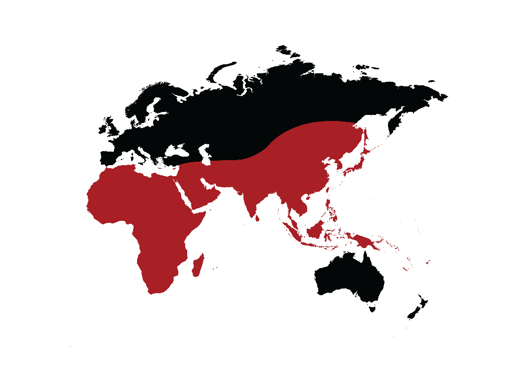

Over two billion people suffer from anemia, or a lack of red blood cells. This is largely because of Iron and Vitamin B12 deficiences. Especially in poorer areas of the world, the prevalence of Iron deficiency is staggering. above
While many meats can can supply dietary iron, dietary restrictions or poverty prevent many from accesing them. This is the problem we are trying to solve with RedRice.
RedRice is one of the first genetically modified plants that can treat anemia. Red in color and easily digestible, RedRice is a cheap alternative to nutrient distribution in third world countries and areas at risk of Iron and Vitamin B12 dificiencies.
More about RedRice?